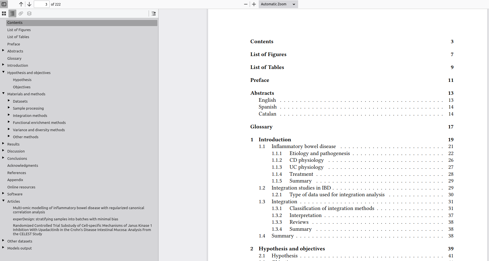
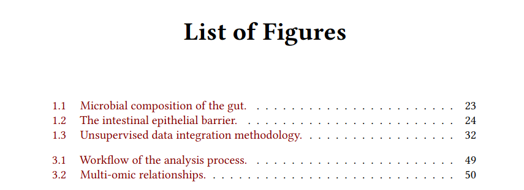
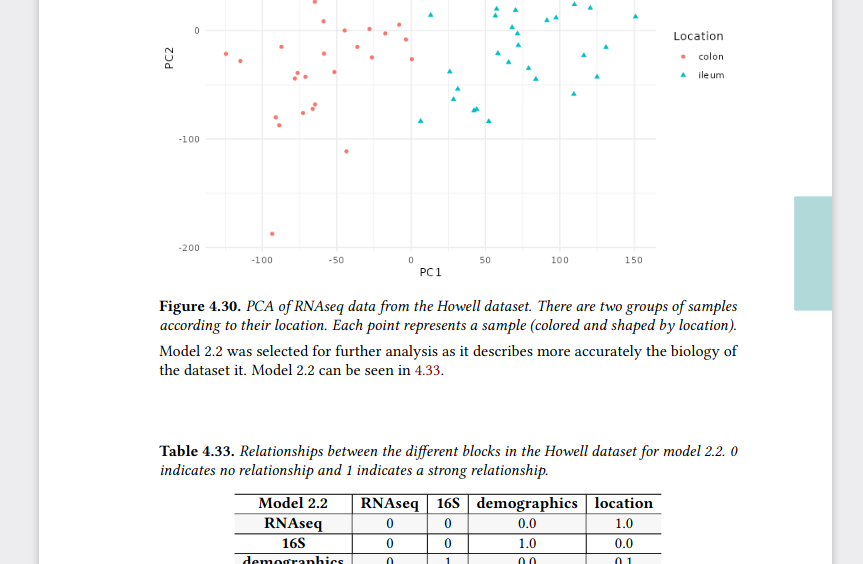
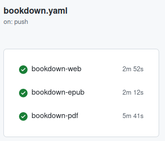
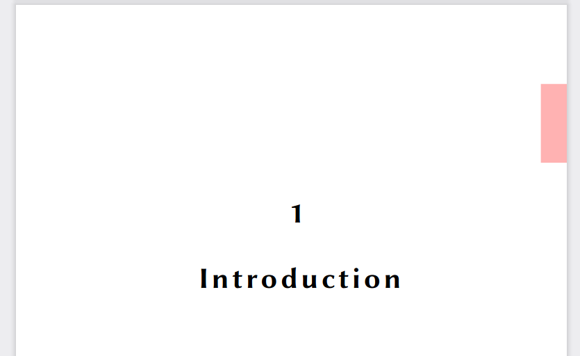
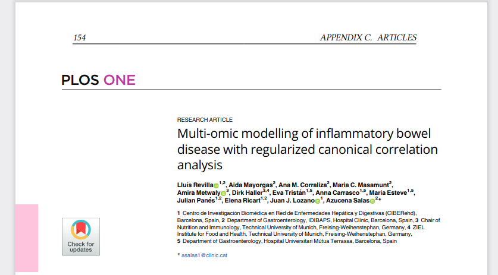

Writing a thesis with bookdown
Learning latex tweaks with bookdown
 Pen writing in a sheet
Pen writing in a sheet
On this post I am documenting the experiences I had writing my PhD thesis with bookdown. I made the thesis in web and pdf format (and epub) to make more available the thesis. Most of the experiences and advise I’ll share here are based on my experiences to improve the pdf format. It is the most important format as ultimately is what I’m going to use for printing.
First of all you should know there is a package thesisdown with a few templates for some universities.
If yours is there, or if you want to learn how are they you can have a look at the files.
On my case I didn’t have any template and the university guidelines are not long, (have two compulsory pages at the beginning and have 5 sections).
That’s why I tweaked the default format inspired by the recent thesis defended on my group.
Well, without further delay let’s dive in things I learned:
Important
Captions
knitr::kable places the captions on tables at the top (by design, see issue #1189), while knitr places the captions on the bottom of figures.
So if you want to have all the captions below the element you’ll need to use a different package for it (booktable, or others).
If you want to have short captions for an easy readable table of figures and table of tables you’ll need to use kable(short.caption = "TOC", caption = "Long caption below the table").
In addition, on kable if you use something like Häsler you’ll need to convert this “ä” to “\u00E4”.
I also wanted to highlight and differentiate the captions.
I ended up using the caption package:
\usepackage{caption}
% Set in bold the numbering of tables and chapters
\captionsetup{labelfont=bf,width=\textwidth}The \textwidh is to make more with the captions otherwise they just spans the size of the table or figure.
Repeating text
If you find yourself repeating some text to explain some figures, legends or tables you can use text references.
(ref:foo) Define a text reference **here**. Then you can use (ref:foo) to repeat the same text.
Although formatting cannot be applied afterwards (i.e. **(ref:foo)**) it is handy to just write once and avoid repetition (And also if to keep backwards compatibility you can’t use the new special comment #| to specify chunk options).
Placing options
Many latex instructions go to the index.Rmd file.
The once I included are:
split_by: chapter
link-citations: true
always_allow_html: true
colorlinks: yes
# https://bookdown.org/yihui/rmarkdown-cookbook/latex-variables.html
# links-as-notes: true # Only activate for actual printing
fontfamily: libertine
fontsize: 12pt
papersize: a4 # The printed size of the thesis
acronyms:
loa_title: ""
insert_loa: false
sorting: usage
include_unused: false
fromfile: ./style/acronyms.yml
geometry:
- top=25.4mm
- bottom=25.4mm
- left=25.4mm
- right=25.4mm
- bindingoffset=6.4mm
- asymmetric
classoption:
- twoside
- openright
lot: yes
lof: yessplit_byin the html format how to move to the next section.link-citationsAdd a link to the citation?colorlinksIf links should have a colorlinks-as-notesInstead of having hyperlinks have them included as notes. It is useful for printing where the reader doesn’t have the option to click a link but might be interested in knowing more.fontfamilyandfontsizedecide which font and size will be used.papersizethis chooses the available space and greatly affects the position of figures and tables, which can float on the text according to LaTeX algorithm.acronymsConfiguration of the acronymsgeometryDefines the margins, consider that on books the central zone will not be readable. Thebindingoffsetadds some space to make it easier reading.classoptionOptions for the book formatlotandlofindicate if list of tables (lot) and list of figures (lof) should be included on the pdf output.
The book_filename if present on index.Rmd is overwritten by what is on _bookdown.yml but be careful also on what goes to _bookdown.yml and on the specific format on _output.yml .
Nice little tricks
Dedication
Looking at the source code of the bookdown book I found that the correct way was to use before_body option.
Chapter thumb
One thing I liked from other thesis is the ability to have on the printed edition a little mark on the side of the page to find a section.
My first search showed that it was possible, but I didn’t want to load the tikz package.
I ended up using this solution after adding and modifying the colors, changing the size and position.
\usepackage[scale=1,angle=0,opacity=1,contents={}]{background}
\usetikzlibrary{calc}
\usepackage{ifthen}
\usepackage{lipsum}
% auxiliary counter
\newcounter{chapshift}
% the list of colors to be used (add more if needed)
\newcommand\BoxColor{%
\ifcase\thechapshift blue!30\or red!30\or olive!30\or magenta!30\or teal!30\or lime!30\or orange!30\or violet!30\or brown!30\else yellow!30\fi}
% the main command; the mandatory argument sets the color of the vertical box
\newcommand\ChapFrame{%
\def\TitleText{\leftmark}%
\AddEverypageHook{%
\ifthenelse{\isodd{\value{page}}}
{\backgroundsetup{
contents={%
\begin{tikzpicture}[overlay,remember picture]
\node[fill=\BoxColor,inner sep=0pt,rectangle,text width=1cm,
text height=3cm,align=center,anchor=north east]
at ($ (current page.north east) + (-0cm,- 3*\thechapshift cm) $)
% {\rotatebox{90}{\parbox{4cm}{%
% \centering\textcolor{black}{\scshape\thechapshift}}}};
{};
\end{tikzpicture}
}%
}
}
{\backgroundsetup{
contents={%
\begin{tikzpicture}[overlay,remember picture]
\node[fill=\BoxColor,inner sep=0pt,rectangle,text width=1cm,
text height=3cm,align=center,anchor=north west]
at ($ (current page.north west) + (-0cm,-3*\thechapshift cm) $)
% {\rotatebox{90}{\parbox{4cm}{%
% \centering\textcolor{black}{\scshape\thechapshift}}}};
{};
\end{tikzpicture}
}
}
}
\BgMaterial}%
\stepcounter{chapshift}
}This code basically means that I need to add \ChapFrame when I want the chapter thumb (I didn’t know the name before searching this).
Once started it changes colors according to \chapshift which is automatically incremented by \ChapFrame.
I also set to change position according to \thechapshift so that they make a stair.
The code basically changes the position of the mark if the page is even or odd, so that it is always on the outer side of the booklet.
The size is width=1cm, height=3cm with text inside it.
If you want text I recommend either short titles or the chapter number \chapter to ensure it is readable.
A tiny trick I learned was to reset the counter with \afterpage{\setcounter{chapshift}{0}} after the bibliography so that the appendix would use the same mark from the beginning.
If you want different colors for the appendix you could just create a new counter and a new \BoxColor
Index with index on it
I wanted to have the table of contents to show were it began, simply because with all the added page on the front and white pages it might be hard to find it. It is also handy when using the outline of the pdf version to go back the the index to then move to another section.
Simply loading the \tocbibind packages was enough:
\usepackage{tocbibind}
Screenshot of the outline and the real index. The outline has the same content as the real index.
Note: I found a “bug” were the appendix link goes to the bibliography (the previous chapter) instead of the correctly displayed page.
Table of figures and tables
It was not required but I wanted a table of tables and a table of figures, to make it easier go to results of the thesis.
To add them I used the tocbibind package that automatically adds it (and the options on index.Rmd wasn’t sure from the answer I found online).
\usepackage{tocbibind}
Screenshot of the first lines of the list of figures, with a short caption for each figure
Acronyms
I repeat many acronyms on the thesis and I wanted to have a brief table with them.
I used the package acronymsdown which is simple, easy and works well for web and pdf.
My only wish is that it had a way to go back to were the reader was.
To place the acronyms were I wanted I had to remove the automatic title and use the following:
# Glossary {-}
\printacronymsI add them to the beginning after the summaries of the thesis and the preface, right before the body of the thesis.
Placing floats
I included many figures and tables which makes it hard to have all of them near where they are added on the text. While it can be forced, I didn’t want that but neither I wanted them too far away.
To avoid them going after the subsection I added this command before the title of the next subsection:
\FloatBarrierProbably it could be done automatically renewing the subsection title format, but as I only had to do this 5 times is manageable.
Following an answer, the figure floating algorithm was set with these preferences:
\usepackage{float}
\usepackage{colortbl}
\let\origfigure\figure
\let\endorigfigure\endfigure
\renewenvironment{figure}[1][2] {
\expandafter\origfigure\expandafter[!htbp]
} {
\endorigfigure
}
A figure and a table on the same page, the label is in bold and the text in italics, on the right side (the page is odd) the blue chapter thumb
Github actions
To render I initially used my r-lib/actions but without using any package structure. However, once I set a DESCRIPTION file with all the package dependencies it was much faster, as I could use the setup-r-dependencies action.
Probably there is also a faster way directly installing binaries with the help of bspm or the system package manager, but this was convenient enough.
Also the action to install tinytex made my job for the pdf to render much faster (from 15 minutes to 5 minutes).

Screenshot of the github actions (on push) were bookdown-web takes ~3 minutes, bookdown-epub ~2 minutes and bookdown-pdf ~5 minutes.
Empty pages
The chapters are on the right side of the book so they must end or have a blank page before.
To have a completely blank page I found a simple solution, simply load a latex package emptypage.
\usepackage{emptypage}Title pages
Where to place titles, format it with titlesec:
\usepackage{titlesec}
\titleformat{\chapter}[display]{\fontsize{32pt}{48pt}\bfseries\sffamily\filcenter}{
\fontsize{72pt}{72pt} \thechapter \ChapFrame
} % Content on the chapter title page
{20pt}{\lsstyle}[\thispagestyle{empty} \cleardoublepage]% https://tex.stackexchange.com/a/347162/178206
\titleformat{name=\chapter, numberless}{\normalfont\huge\bfseries\filcenter}{}{20pt}{\Huge}
\titlespacing*{\chapter}{0pt}{100pt}{40pt}The first line load the package.
Then we set the format of the chapters option display and the format of text and what appears on that page.
\thechapter is the title of the chapter (while \chatper is the number).
\chapFrame is the new command defined to set chapter thumb.
The other benefit this had was that the title page had no page number.

A screenshot of the introduction title page. There is a number 1 and Introduction a couple of lines below. On the right side a red box 3 cm below the top.
Page numbers
I decided to use different style for page numbers
\usepackage[automark,headsepline]{scrlayer-scrpage}% sets page style scrheadings automatically
\clearpairofpagestyles
\ihead{\leftmark}
\ohead*{\pagemark}
\setkomafont{pagenumber}{}% default is \normalfont\normalcolorInclude pdfs
As part of the appendix I added my publications on their pdf format. To do so I used the following code modified from the original answer:
\usepackage{pdfpages}
\includepdf[pages=-, pagecommand={}, templatesize={\textwidth}{\textheight - 25pt}, trim=0 0 0 20pt,]{pdf/paper.pdf}I had to tweak the size were it was placed to keep the page numbers and running titles. The last curly brackets indicate the location of the pdf to include.
The benefit of this is that these pages now are also numbered with the thesis style and the title.

Screenshot of the pdf included showing the page number of the thesis and the content of the article “Multi-omic modelling of inflammatory bowel disease with regularized canonical correlation analysis”
Running titles
If you have a long title such as you are probably interested on having a shorter version for it on the thesis pages.
## experDesign: stratifying samples into batches with minimal bias
\sectionmark{experDesign: paper}I don’t think it actually made a big difference but it might we important for chapters.
Merging pdfs
As I said I needed some pages at the beginning of the thesis. But I wanted to keep the outline of the pdf, and I found an solution online explaining how to do it.
To add multiple pdf I did this:
gs -q -SDEVICE=pdfwrite -DPDFSETTINGS=/prepress -o merged.pdf page1.pdf page2.pdf thesis.pdfReducing pdf size
At the end the pdf was bigger than what I could send over email.
I found this answer that helped me to reduce the size and send it.
gs -sDEVICE=pdfwrite -dCompatibilityLevel=1.4 -dPDFSETTINGS=/ebook -dNOPAUSE -dQUIET -dBATCH -sOutputFile=output.pdf input.pdfConclusion
The process of writing the thesis is usually one of the last steps on a PhD. I recommend to write something and avoid having a blank page. But once written you must take care of the presentation and style, this is a complete different skill than writing or research, so it can be specially exhausting.
Bookdown through the preamble and body options is great for setting your style. But if you are short of time, are tired you might benefit from working and using some of these already created solutions and just modify what you need (as I did).
To finish, so that you can see the final format it is here. There you can download it in pdf too to see most of these commands in action.
If you are writing your thesis, enjoy, keep calm and reuse other solutions!